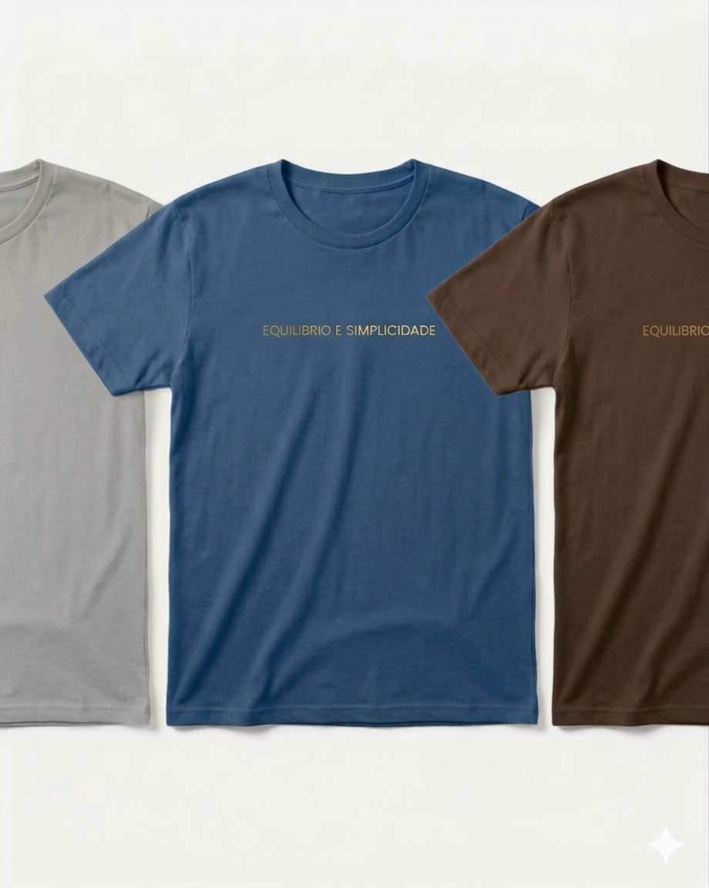
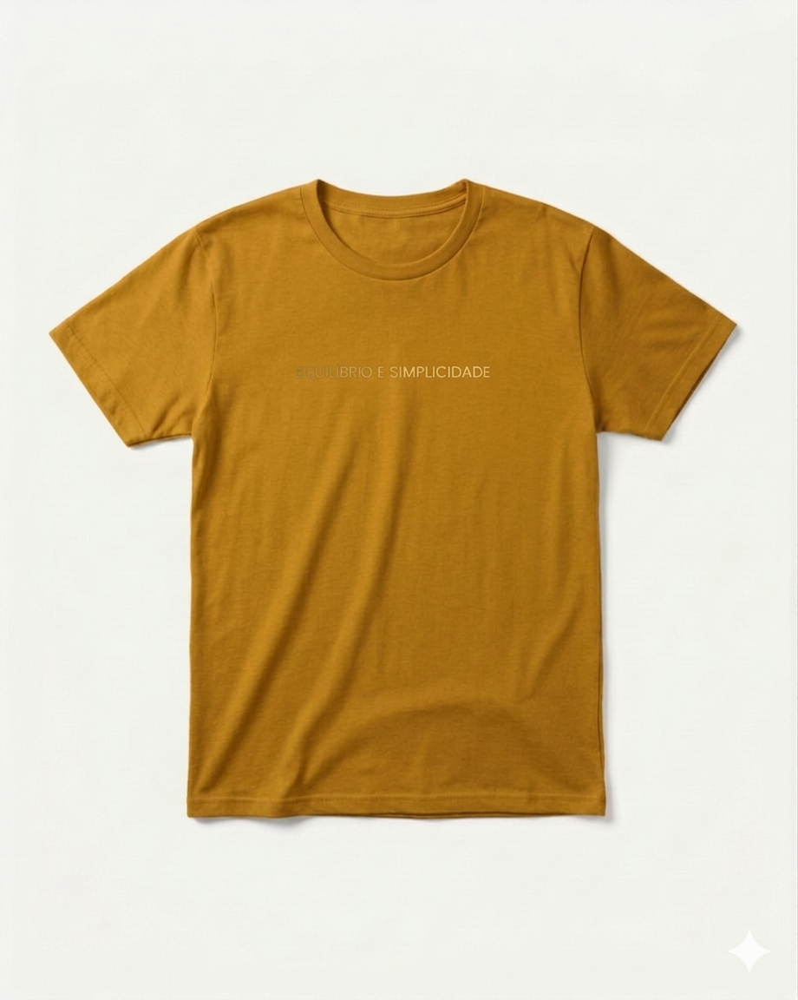
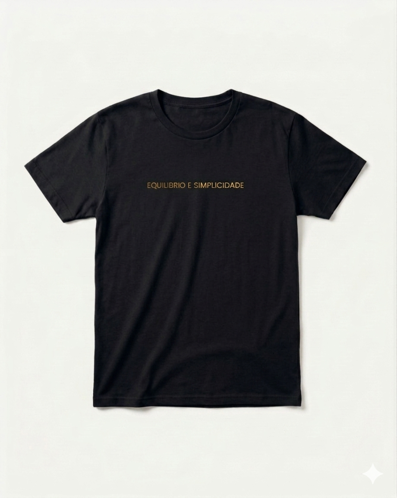

Nossa Loja
Leve a essência do Transbordar com você. Conheça nossa camisa exclusiva.





Camisa Oversized Premium
R$ 99,90
Desenvolvida com algodão sustentável, nossa camisa oferece o máximo conforto para sua prática de yoga ou para o dia a dia.
- 100% Algodão Orgânico
- Estampa em silk de alta durabilidade
- Modelagem unissex


Caneca Transbordar
R$ 49,90
Com a estampa "O lugar que você procura, existe", nossa caneca é perfeita para seu café, chá ou qualquer momento de pausa e equilíbrio.
- Cerâmica de alta qualidade
- 325ml de capacidade
- Pode ser usada no micro-ondas